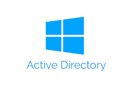

Projets

Virtualisation & Infrastructure Core
Deploiement et securisation d'un hyperviseur de type "Bare Metal" pour supporter une infrastructure d'entreprise critique.

Mise en place d'une Infrastructure Active Directory
Pour ce projet, j'ai conçu une architecture Active Directory hautement disponible, simulant un environnement de production réel.